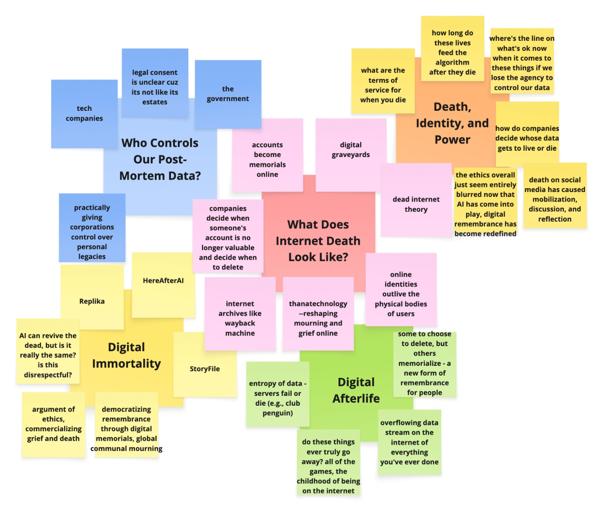
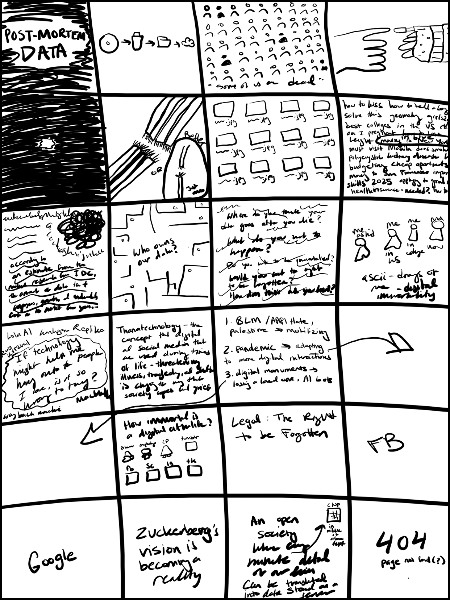
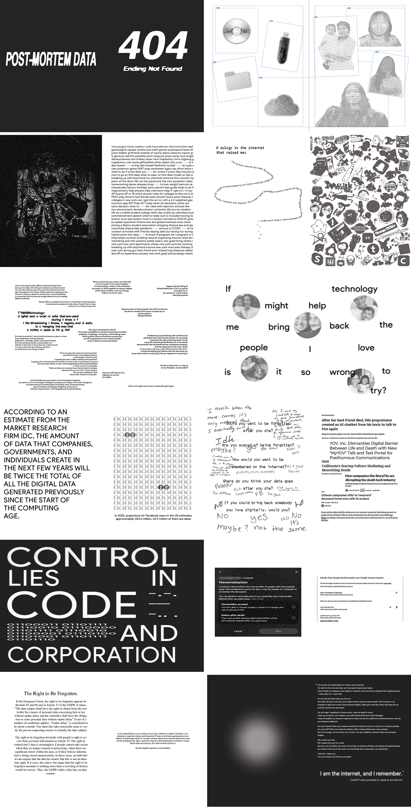

.webp)
2024 - Zine - InDesign, Risograph
What happens to our data after we die and how has grief changed with technology?
Process

The research synthesized from affinity mapping argues that digital death isn’t just about memory, but rather, power, ethics, and fragility. Who gets remembered (and how) is determined less by families and more by corporations, code, and contested politics of digital legacy.

Moving away from an exclusively legal analysis of post-mortem data, this iteration pivots toward the deeply personal and emotional dimensions of our digital lives. While legislative boundaries provide structure, they often miss the human reality: our digital and physical selves have become inextricably interwoven. By anchoring the project in personal reflection by examining how growing up online shapes identity, emotional attachment, and legacy, this phase broadens the inquiry beyond data ownership to explore what our digital footprints truly mean to us and those we leave behind.
Outcomes
This iteration marks a total revamp of the initial concept into a thematic zine that explores the digital afterlife, highlighting the paradox of digital immortality reliant on fragile corporate infrastructures, legal frameworks, and shifting cultural norms. Working through this print piece expanded my technical skills in Adobe Illustrator and InDesign, allowing me to bridge my equal passions for digital design and physical print media. It offered a meaningful opportunity to translate complex data into creative visual forms rather than relying strictly on text and numbers, setting up future explorations into Risograph printing, data privacy, and advanced data visualization techniques.
